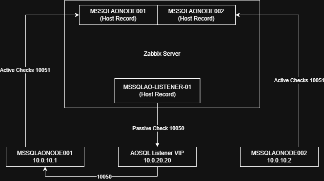
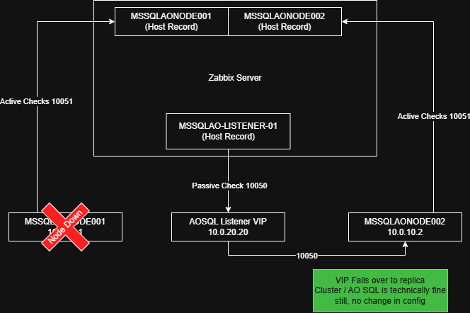

Configuring Zabbix Agent 2 on a Windows Fleet
Introduction
Zabbix Agent 2 is the recommended agent for Windows environments, particularly if you need any of its plugins. This chapter applies equally to Windows Servers, Windows Desktops, or a mix of both. It covers the structure of the agent configuration file and shows how to deploy the agent with the initial settings most environments need.
It assumes you are a sysadmin with a way to deploy an MSI package followed by PowerShell scripts, for example PDQ Deploy or Ivanti Endpoint Manager (formerly Landesk). If you manage a small environment without such tools, every step can also be performed manually.
A consistent deployment up front reduces overhead later, whether you are upgrading agents or auto-registering new and existing hosts. Examples of the configuration files and PowerShell scripts are provided at the end of this chapter.
Summary
Configuring the agent correctly from the start saves a great deal of time when upgrading the agent fleet wide, assuming you use the Microsoft Installer (MSI) package. The recommendations below are covered in the order listed.
- Take control of your configuration and treat it as a template.
- Keep the
Hostname=field fully qualified and lowercase if you can, for examplehostname.domain.org. - Use
Include=C:\\some\\path\\*.confto move customizations out of the default configuration file. - Use PowerShell scripting to set
Hostname=automatically. - Use
ForceActiveChecksOnStartandRefreshActiveCheckswhen using active templates (ServerActive). - Define metadata strings and consider them for autoregistration.
- Prioritize active templates over passive ones where possible.
- Use the MSI installer package for deployment.
Taking Control of Your Configuration File
Treat the zabbix_agent2.conf file with care. Removing default lines can cause
issues when it is time to upgrade. Adding lines at the bottom of the file is
acceptable, but it is better to use the Include= parameter and point it to a
new file that you maintain in a different directory.
The goal of structuring your Zabbix configuration files correctly is to make future Zabbix Agent 2 upgrades seamless when you run the MSI again.
The .\zabbix_agent2.d\plugins.d directory can be used to add more
configuration and is typically preserved during a standard agent uninstall. If
you need to store confidential data such as TLSPSKFile or TLSPSKIdentity and
do not want it in the regular C:\Program Files\Zabbix Agent 2 directory, you
can place it under %PROGRAMDATA% (C:\ProgramData\...). This directory is
hidden by default for users on most Windows installations. Note that
%PROGRAMDATA% should not be seen as a complete security boundary, but in most
cases it is hidden and keeps operational data separate from the agent
installation directory.
When you upgrade via MSI (with the NONMSICONFNAME parameter), the installer
merges your initial zabbix_agent2.conf file with the default one; your
parameter values overwrite the default values. Be aware that custom content may
not carry over. Server, ServerActive, Include and a few other values are
safe.
Each time you change a configuration file, whether it is the main one or one
included via the Include parameter, you must restart the Zabbix Agent 2
service to apply the changes.
In short, for fleet-wide management on Windows, take the time to read the base
zabbix_agent2.conf. If you need anything beyond the default parameters, use
Include= to define it elsewhere.
You can use the configuration snippets at the end of this chapter as a starting point, but read the next few sections before you do.
Keeping Hostname= Lowercase for Consistency
This is very important if you use ServerActive. The Hostname= value must
match the Host name field of the host record and is case-sensitive,
otherwise your active agent templates for Windows will not work.
✖ This does not work for active checks:
- Configuration file:
Hostname=SOMEserver.domain.com - Zabbix host record,
Host namefield:someserver.domain.com
✓ This works for active checks:
- Configuration file:
Hostname=someserver.domain.com - Zabbix host record,
Host namefield:someserver.domain.com
Using the Include= Parameter to Your Advantage
During an agent upgrade through the MSI command line, the installer does its
best to merge the old C:\Program Files\Zabbix Agent 2\zabbix_agent2.conf file
into the newly generated zabbix_agent2.conf.
Even with the NONMSICONFNAME MSI parameter, not all parameters are merged or
carried over (as of 7.0 LTS). Server, ServerActive, Hostname and
Include are preserved. Consider the C:\Program Files\Zabbix Agent 2\ root
directory a "no-go" zone, apart from what the MSI needs for the initial
installation.
Parameters such as ForceActiveChecksOnStart and RefreshActiveChecks are not
brought over. The solution is to use the
C:\Program Files\Zabbix Agent 2\zabbix_agent2.d\plugins.d directory, or a
custom directory structure under %PROGRAMDATA%.
In short, put your custom configuration files in other directories and use
Include= in zabbix_agent2.conf, so that they persist through a full
uninstall of the agent and are not lost during an upgrade.
Custom Solution: Splitting Custom Configuration Under %PROGRAMDATA%
Directory structure:
C:\ProgramData\Zabbix-ext
├── conf.d
│ ├── active_agent.conf
│ ├── custom_config.conf
│ └── metadata.conf
└── scripts
└── Invoke-ActiveDirectoryChecks.ps1
The following one-liner in
C:\Program Files\Zabbix Agent 2\zabbix_agent2.conf includes all three
configuration files in the C:\ProgramData\Zabbix-ext\conf.d directory:
Using PowerShell Scripting to Your Advantage
Some deployment tools offer a native "MSI Install" step but limit which strings can be passed to the MSI switches. This may not apply to every reader, but it is worth mentioning.
This becomes a problem if you need to set Hostname= in a specific way, such as
the hostname of the targeted endpoint.
This section provides a simple example of a post-install PowerShell step that works around that limitation.
When you plan your initial configuration for
C:\Program Files\Zabbix Agent 2\zabbix_agent2.conf, do so in the context of a
template. PowerShell can then replace the Hostname= value with the current
FQDN during installation, if your deployment method does not allow variables in
the MSI switches.
$file="C:\Program Files\Zabbix Agent 2\zabbix_agent2.conf"
$FQDNHostName = [System.Net.Dns]::GetHostEntry($env:COMPUTERNAME).HostName
$FQDNHostNameToLower = $FQDNHostName.ToLower()
$FQDNHostNameToLower += ".domain.org" # Your domain name but also lowercase if needed
(Get-Content $file) -replace "Hostname=REPLACEME","Hostname=$FQDNHostNameToLower" | Set-Content $file
Why Consider PowerShell?
Products such as Ivanti Endpoint Manager, SCCM and PDQ Deploy have native MSI
install steps for deployment tasks, so you do not need to write a PowerShell or
batch script to perform the installation. The deployment tool calls it natively
in cmd.exe with the msiexec /i... command. This sounds convenient, but it
may not always deliver exactly what you need.
The Limitation of Native MSI Steps
With some deployment tools, the native MSI method does not make it easy to insert properties of the targeted machine into the command switches as variables, without resorting to workarounds.
For example, a specific deployment tool does not allow the following and accepts only inline string literals. It does not allow a variable to be passed to the MSI method switches:
/HOSTNAME="{{DEPLOYMENT_TOOL_VAR_TARGET_SERVER_NAME}}"
In other cases, the tool lacks basic string manipulation, such as appending a domain to the variable inline in an MSI switch:
/HOSTNAME="{{DEPLOYMENT_TOOL_VAR_TARGET_SERVER_NAME}}"+'.domain.com'
In these cases, the organization needs an additional PowerShell step that edits
zabbix_agent2.conf in place after the initial MSI installation.
Using ForceActiveChecksOnStart and RefreshActiveChecks
These parameters are important to understand from a ServerActive monitoring
perspective, and they are essential to have in your agent configuration.
ForceActiveChecksOnStart
When set to 1, the agent immediately queries the Zabbix server (or Zabbix
proxy) for changes to the configured monitoring templates when the agent
service is started or restarted.
This also triggers an immediate low-level discovery (LLD) if one is configured
in the template. Setting this parameter to 1 is highly recommended.
RefreshActiveChecks
Similar to ForceActiveChecksOnStart, this parameter configures how often
Zabbix Agent 2 checks in with a Zabbix server (or Zabbix proxy) for new or
updated active monitoring templates. The value is defined in seconds. A good
starting value is RefreshActiveChecks=300, which equals 5 minutes.
If you change a monitoring template or a host-specific macro override, this is how the agent picks up the updated active-check configuration. If the change requires LLD to run, you must wait for the next discovery cycle as specified in the template.
Metadata and Autoregistration
If you plan to use metadata strings, split them out via Include=, especially
if you allow agent autoregistration.
Metadata lets you control and direct autoregistration actions, for example to
apply different templates based on the value assigned to HostMetadata.
Some organizations use a single string for all hosts. Others set the metadata string based on server role. If you split by role, the value is set per server at installation time or changed afterwards.
Note that if the HostMetadata value is changed, the Zabbix server starts an
autoregistration action (if one is defined) when the agent restarts. If the
HostMetadata value never changes during the lifetime of the agent or
endpoint, autoregistration does not run again after the first time.
You still need to configure the autoregistration actions on the Zabbix server.
Example 1:
Example 2:
Example 3:
Active vs Passive Monitoring Templates
If you have read this far, you will have noticed that this chapter leans towards active checks. There are scenarios for both, and both can be used at the same time.
From a design and architecture standpoint, active checks should be preferred whenever practical. However, you may not be able to send data from a DMZ subnet back to an internal network, for example when company policy only allows connections that originate from the internal network to reach the DMZ. In such cases active checks are not possible, and passive checks come into play.
By default, prepare your agent configuration for both scenarios by setting
Server= (passive) and ServerActive= (active).
When to Use Active Templates
Anything that requires LLD, such as discovering disks (C:\, D:\, and so on)
or Windows services, as well as CPU, RAM and all other basic monitoring needs,
should be collected by the agent to reduce the load on your Zabbix server or
proxy.
Active checks are strongly preferred in Windows environments, where querying
perfmon can be slow during high CPU load or disk I/O contention.
When to Use Passive Templates
This can be tricky, but one organization needed to monitor the status of a Microsoft SQL Server Always On availability group. The availability group consists of multiple hosts that already exist in Zabbix and are sending data.
A cluster can be healthy overall while a specific node is unhealthy or down. If you monitor the cluster from only a single node, you could miss an alert. If you apply a template to all three hosts, you get duplicate data.
The question becomes: how do you monitor the cluster health as a single entity?
The solution: the organization created a separate passive template to query the Microsoft SQL Server Always On listeners, which are virtual IPs that migrate between the hosts. They then created new hosts in Zabbix for each listener and used a passive check against the listener IP. If the availability group fails over to a new node, the Zabbix server or proxy still queries the same IP, even though the data now comes from a different server and Zabbix agent.

Normal operations

Microsoft Always On listener failover
Using the MSI Installer
This is largely self-evident, so we keep it short.
For deploying Zabbix Agent 2 on Windows, you need an installation package that can handle both installation and upgrade, and that meets a few requirements:
- Standardized silent installations
- Standard switches for installation options
- A standard switch for repairing or installing additional agent plugins
- Easy management via PDQ Deploy, Ivanti Endpoint Manager, SCCM, Group Policy or Intune
The MSI meets these requirements, including detection of an existing installation.
Example Install Command
Command Prompt:
msiexec.exe /i "C:\temp\zabbix_agent2-7.0.30-windows-amd64-openssl.msi" HOSTNAME="someendpoint.domain.com" SERVER="zabbixnode1ipaddress,zabbixnode2ipaddress" SERVERACTIVE="zabbixnode1ipaddress;zabbixnode2ipaddress" /qn /silent
PowerShell:
Start-Process msiexec.exe -ArgumentList '/i "C:\temp\zabbix_agent2-7.0.30-windows-amd64-openssl.msi" HOSTNAME="someendpoint.domain.com" SERVER="zabbixnode1ipaddress,zabbixnode2ipaddress" SERVERACTIVE="zabbixnode1ipaddress;zabbixnode2ipaddress" /qn /silent' -Wait
Example Upgrade Command
Use this command for upgrades if you follow the configuration shown at the end of this chapter.
Command Prompt:
msiexec.exe /i "zabbix_agent2-7.0.31-windows-amd64-openssl.msi" NONMSICONFNAME="C:\Program Files\Zabbix Agent 2\zabbix_agent2.conf" /qn /silent
PowerShell:
Start-Process msiexec.exe -ArgumentList '/i "zabbix_agent2-7.0.31-windows-amd64-openssl.msi" NONMSICONFNAME="C:\Program Files\Zabbix Agent 2\zabbix_agent2.conf" /qn /silent' -Wait
Order of the MSI and Script Installation
If you use MSI and PowerShell 5.1 (Windows PowerShell) to install the agent,
create the Zabbix-ext directory and apply a templated zabbix_agent2.conf,
follow this order:
- Install the agent via MSI as usual.
- Optional edge case: if you cannot set
Hostname=,Server=andServerActive=through the MSI switches, have a PowerShell script overwrite these fields inC:\Program Files\Zabbix Agent 2\zabbix_agent2.conf. A small example that does this inline, without overwriting the entire file, is shown in Using PowerShell Scripting to Your Advantage.
- Optional edge case: if you cannot set
- Have a PowerShell script create the
Zabbix-extdirectory under%PROGRAMDATA%with the.conffiles. - Have a PowerShell script add the
Include=fields at the bottom ofC:\Program Files\Zabbix Agent 2\zabbix_agent2.conf, or create a new file such asC:\Program Files\Zabbix Agent 2\zabbix_agent2.d\plugins.d\custom_includes.conf. - Have a PowerShell script restart the agent to apply all changes.
-
Have a PowerShell script configure Windows via
sc.exeto restart the Zabbix Agent 2 service if it fails:
Real-World Example Configurations: A Single Highly Available Zabbix Environment
This example contains the standard configuration in the default location, plus
a Zabbix-ext directory under %PROGRAMDATA% instead of zabbix_agent2.d.
You can use a PowerShell command to overwrite Hostname=, matching on
Hostname=REPLACEMEBUTLOWERCASE.domain.com.
C:\Program Files\Zabbix Agent 2\zabbix_agent2.conf
# C:\Program Files\Zabbix Agent 2\zabbix_agent2.conf (snippet with author comments)
# This is a snippet of the main configuration file with author comments.
# Do not remove the default parameters or lines from this file. You may change
# the Server and ServerActive values and add Include= at the bottom.
# Do not customize this base file any further than those parameter values.
# Log file configuration
# Set by default by the agent at install/upgrade in the base file
LogFile=C:\Program Files\Zabbix Agent 2\zabbix_agent2.log
#...file continues...
# Server, passive configuration (the Zabbix server/proxy polls this endpoint)
# Set by the user via the MSI installer at install time
Server=10.0.1.24,10.0.1.25
#...file continues...
# ServerActive, active configuration (the endpoint sends data to the Zabbix
# server/proxy)
# HA nodes of the same environment are separated by semicolons
# Set by the user via the MSI installer at install time
ServerActive=10.0.1.24;10.0.1.25
#...file continues...
# Preferably, fully qualify your hostname and make it lowercase.
# For ServerActive configurations this field is REQUIRED and case-sensitive!
# Set by the user via the MSI installer at install time
Hostname=REPLACEMEBUTLOWERCASE.domain.com
#...file continues...
# Include configuration files for plugins. You can also use a literal path.
# Include=C:\\Program Files\\Zabbix Agent 2\\zabbix_agent2.d\\
# Set by default by the agent at install/upgrade in the base file
Include=.\zabbix_agent2.d\plugins.d\*.conf
#...file continues...
# Include any extra configuration directories at the bottom of the file.
# This one was added by the system administrator to place custom configuration
# in the %PROGRAMDATA% directory, so that it is hidden from non-administrators.
Include=C:\\ProgramData\\Zabbix-ext\\conf.d\\*.conf
The Zabbix-ext Directory, Configuration Files and Custom Scripts
Directory structure of Zabbix-ext under %PROGRAMDATA%:
C:\ProgramData\Zabbix-ext
├── conf.d
│ ├── active_agent.conf
│ ├── custom_checks.conf
│ ├── metadata.conf
│ ├── key.psk
│ └── psk_options.conf
└── scripts
└── Invoke-ActiveDirectoryChecks.ps1
C:\ProgramData\Zabbix-ext\conf.d\active_agent.conf
# Place this file at C:\ProgramData\Zabbix-ext\conf.d\active_agent.conf
# Forces the agent to fetch its configuration immediately on start
ForceActiveChecksOnStart=1
# How often the list of active checks is refreshed, in seconds
RefreshActiveChecks=300
C:\ProgramData\Zabbix-ext\conf.d\custom_checks.conf
# Put custom UserParameters here, or split them out per .conf file
UserParameter=PowerShell.ps_dcdiag_checks,PowerShell -ExecutionPolicy Bypass -File "C:\ProgramData\Zabbix-ext\scripts\Invoke-ActiveDirectoryChecks.ps1"
C:\ProgramData\Zabbix-ext\conf.d\metadata.conf
# To be used with the deployment package. This file is intended to be changed
# per server, or fleet-wide if all agents need the same change.
# For example: WindowsServer_ActiveDirectoryServers ---> an autoregistration
# action places the host in a host group.
# Place this file at C:\ProgramData\Zabbix-ext\conf.d\metadata.conf
HostMetadata=WindowsServer
C:\ProgramData\Zabbix-ext\conf.d\key.psk
This is not a real key and is not used anywhere. It only illustrates what the file contains.
C:\ProgramData\Zabbix-ext\conf.d\psk_options.conf
# PSK configuration
# Generate a key with: openssl rand -hex 32, and store it in key.psk
TLSConnect=psk
TLSAccept=psk
TLSPSKFile=C:\\ProgramData\\Zabbix-ext\\conf.d\\key.psk
TLSPSKIdentity=PSK-001
C:\ProgramData\Zabbix-ext\scripts\Invoke-ActiveDirectoryChecks.ps1
# This script is meant to run on a Windows domain controller to perform some
# basic health checks. It returns a JSON payload that can be used in a template.
# Add more tests here if you need them.
$tests = "services","replications","advertising","fsmocheck","ridmanager","machineaccount","connectivity","FRSSysvol"
# Runs dcdiag /test:INPUTSTRINGHERE and looks for "failed".
# Returns a PSCustomObject as @{INPUTSTRINGHERE: INTEGER}
function Invoke-DcDiagTest {
param (
[Parameter(Mandatory=$true)][string]$TestName
)
$ReturnPSCustomObject = [PSCustomObject]@{}
$result = dcdiag /test:$TestName | Select-String "failed"
If ($result) {
$ReturnPSCustomObject | Add-Member -MemberType NoteProperty -Name $TestName -Value 0 # 0 means bad
} else {
$ReturnPSCustomObject | Add-Member -MemberType NoteProperty -Name $TestName -Value 1 # 1 means good
}
return $ReturnPSCustomObject
}
$GlobalAllTestsOK = 1 # Preset to true unless a test fails
$OutputOfTests = [PSCustomObject]@{} # Return object that we convert to JSON
ForEach ($TestToRun in $tests) {
$SingularTest = Invoke-DcDiagTest -TestName $TestToRun
$OutputOfTests | Add-Member -MemberType NoteProperty -Name $TestToRun -Value $SingularTest.$TestToRun
If ($SingularTest.$TestToRun -eq 0) {
$GlobalAllTestsOK = 0 # If any test fails, set the flag to 0 (false)
}
}
$OutputOfTests | Add-Member -MemberType NoteProperty -Name "AllTestsPassed" -Value $GlobalAllTestsOK
# Test overrides for debugging
# $OutputOfTests.services = 0
# $OutputOfTests.AllTestsPassed = 0
# Convert to JSON so the Zabbix template can read it
$JSONOutput = $OutputOfTests | ConvertTo-JSON
return $JSONOutput
Questions
- Why is it recommended to keep custom configuration outside of the default
zabbix_agent2.conffile? - What is the purpose of the
Includeparameter? - Why might an organization use
HostMetadata? - In which scenario would a passive check be used instead of an active check?
Useful URLs
- https://www.zabbix.com/documentation/current/en/manual/installation/install_from_packages/win_msi
- https://www.zabbix.com/documentation/7.0/en/manual/appendix/config/zabbix_agent2_win
- https://www.zabbix.com/documentation/7.0/en/manual/discovery/auto_registration
- https://learn.microsoft.com/en-us/windows-server/administration/windows-commands/msiexec
- https://github.com/zabbix/zabbix/blob/master/src/go/conf/zabbix_agent2.win.conf